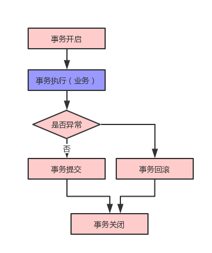
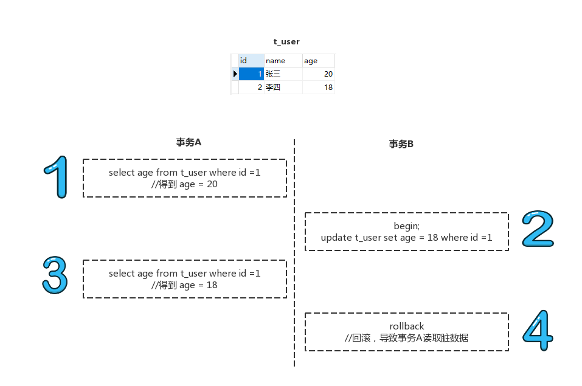
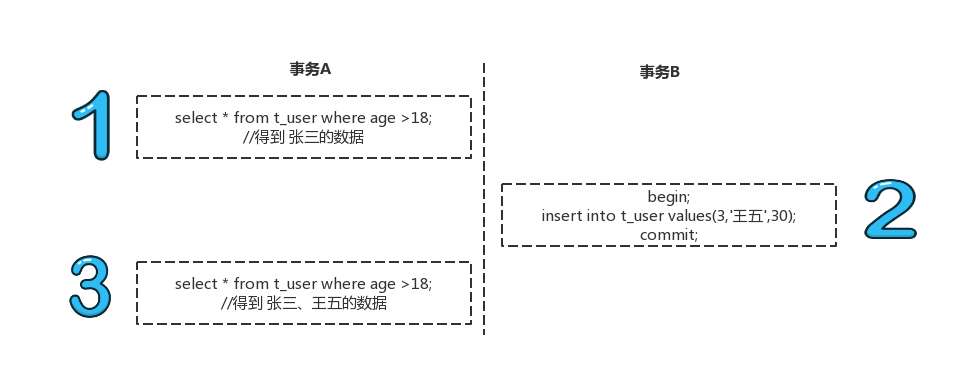

什么是事务
事务（Transaction）是数据库管理系统执行过程中的一个逻辑单位，由一个有限的数据库操作序列构成。
事务的四大特性（ACID）：
- 原子性（Atomicity），每个事务都是一个不可分割的工作单元，事务的操作结果要么都执行成功，要么都执行失败。
- 一致性（Consistency），事务必须是使数据库从一个一致性状态到另一个一致性状态。
- 隔离性（Isolation），事务与事务之间的执行不能互相干扰，即一个事务内部的操作及使用的数据对并发的其他事务是不可见的。
- 持久性（Durability），又叫做永久性（Permanence），指一个事务一旦提交，它对数据库中数据的改变就应该是永久的，后续的其他操作或异常都不应该对其有任何影响。
事务操作的基本流程
事务开启（begin）
事务执行（execute）
事务提交（自动提交AutoCommit / 手动提交CustomCommit）/事务回滚（rollback）（假如出现错误）
事务关闭（close）

事务的基本原理
Spring事务是基于数据库对事务的支持，数据库不支持事务，Spring是无法提供事务功能，下表列出了对事务支持/不支持的主流数据库产品
| 数据库产品 | 事务支持 |
|---|---|
| MySql（MyISAM） | ❌ |
| MySql（InnoDB） | ✔ |
| PostgreSql | ✔ |
| SQL Server | ✔ |
| Oracle | ✔ |
| Sybase | ✔ |
| MongoDb | ❌ |
Spring封装了JDBC的数据库操作，可以按照以下步骤进行
- 获取连接Connection con = DriverManager.getConnection()
- 开启事务，设置自动提交属性con.setAutoCommit（true/false）
- 执行CRUD
- 提交事务/回滚事务con.commit()/con.rollback()
- 关闭连接 con.close()
Spring事务传播性
Spring事务的传播性，就是在多个事务同时存在时，Spring如何处理这些事务的行为，在 TransactionDefinition中定义了如下属性
| 事务类型 | 作用 |
|---|---|
| PROPAGATION_REQUIRED | Spring默认传播属性，如果当前没有事务，新建一个事务 |
| PROPAGATION_REQUIRES_NEW | 新起事务，如果当前存在事务，则挂起当前事务，新起的事务与被挂起的事务不存在关联关系，各自独立，外层事务失败回滚，不会回滚内层事务执行的结果，内层事务失败抛出异常，外层事务可以捕获，是否回滚由业务决定 |
| PROPAGATION_SUPPORTS | 如果当前没有事务，就以非事务的方式执行 |
| PROPAGATION_MANDATOR | 如果当前没有事务，抛出异常 |
| PROPAGATION_NOT_SUPPORTED | 以非事务的方式执行操作，如果当前已存在事务，则挂起当前事务 |
| PROPAGATION_NEVER | 以非事务方式执行，如果当前存在事务，则抛出异常 |
| PROPAGATION_NESTED | 如果存在一个活动的事务，则运行在嵌套事务中，如果没有活动事务，则按照PROPAGATION_REQUIRED类型执行，内部事务的回滚不会对外部事务造成影响，只对DataSourceTransactionManager 事务管理器有效 |
数据库隔离级别
很多数据库管理系统定义了不同的“事务隔离等级”来控制锁的程度。隔离级别越高，锁的开销越大，同时也会增加死锁发生的几率，需要根据实际业务场景详细分析，设置合理的隔离级别。下表列出了数据库的隔离级别
| 隔离级别 | 级别值 | 说明 |
|---|---|---|
| Read-Uncommitted（读未提交） | 0 | 可能导致脏读 |
| Read-Committed（读已提交） | 1 | 避免脏读，允许不可重复度和幻读 |
| Repeatable-Reads（可重复读） | 2 | 避免脏读，不可重复读，允许幻读 |
| Serializable （可串行化） | 3 | 串行化，事务一个一个执行，避免脏读、不可重复度、幻读。执行效率低，谨慎使用 |
脏读
事务A对数据进行了增删改，但是未提交，事务B可以读取到事务A未提交的数据，如果事务A此时回滚了，那么事务B读取到的就是脏数据

不可重复读
在事务A中，进行了两次读操作，第一次读和第二次读操作之间，另外一个事务B对数据行了修改，造成事务A两次读取的数据不一致。
幻读
事务A使用Where条件对一些数据进行查询，此时事务B插入一条数据，这条数据刚好满足事务A的Where条件，导致事务A两次查询出的结果集不一致。

隔离级别越高，数据完整性和一致性就越能得到保证，但是对并发性能的影响也越大
大多数的数据库默认级别是Read-Commited，如SqlServer、Oracle
有一些数据库的默认级别是Repeatable Read，如Mysql（InnoDB）
Spring中的隔离级别
Spring的事务是基于数据库的，因此隔离级别和数据库差不多，只是多了个默认级别，如下：
| Spring隔离级别 | 解释 |
|---|---|
| ISOLATION_DEFAULT | PlatfromTransactionManager默认的隔离级别，与选用数据库的默认隔离级别相同 |
| ISOLATION_READ_UNCOMMITTED | 最低的隔离级别，同数据库的Read-Uncommitted |
| ISOLATION_READ_COMMITTED | 同数据库的Read-Committed |
| ISOLATION_REPEATABLE_READ | 同数据库的Repeatable-Reads |
| ISOLATION_SERIALIZABLE | 同数据库的Serializable |
Spring事务嵌套
通过上面的数据库事务理论知识，大致了解数据库事务和Spring事务的一些属性和特点，接着分析一些嵌套事务的场景，了解Spring事务的传播机制。
PROPAGATION_REQUIRED（Spring默认）
支持当前事务，如果当前没有事务，创建一个事务执行
以ServiceA的methodA()调用ServiceB的methodB()为例，
如果methodA()，methodB()的事务级别定义为PROPAGATION_REQUIRED，那么执行该方法的时候，已经有了事务，此时调用ServiceB.methodB()，发现已经运行在methodA()的事务内，就不再起新事务；
如果ServiceB.methodB()被调用时并没有在事务中，就会新建一个事务运行；
此时无论是methodA()异常还是methodB()异常，事务都会被回滚。
PROPAGATION_REQUIRES_NEW
新建事务，如果当前已存在事务，则把当前事务挂起。
假设ServiceA.methodA()的事务级别为PROPAGATION_REQUIRED，ServiceB.methodB()的事务级别为PROPAGATION_REQUIRES_NEW，当执行methodB()时，methodA()所在的事务就被挂起了，等methodB()的事务执行完，才能继续执行methodA()的事务。
这种情况下，内层事务（methodB()的事务）如果已提交，外层事务（methodA()的事务）异常不会导致内层事务回滚。反之内层事务抛出的异常，可以由外层事务捕获，至于外层事务要不要回滚，取决于对异常的处理。
PROPAGATION_SUPPORTS
支持当前事务，如果当前没有事务，以非事务的方式执行。这个比较好理解，methodA()如果存在事务，methodB()就加入当前事务中，如果没有事务，则methodB()也不开启事务，内层事务完全依赖于外层事务。
PROPAGATION_MANDATORY
支持当前事务，如果当前没有事务，抛出异常。也很好理解，方法必须运行在事务下，如果外层事务不存在，抛异常。
PROPAGATION_NOT_SUPPORTED
以非事务方式执行，如果当前存在事务，则挂起当前事务。
PROPAGATION_NEVER
与PROPAGATION_MANDATORY相反，PROPAGATION_NEVER完全以非事务方式执行，如果存在事务，抛异常。
PROPAGATION_NESTED
这个传播属性就相对复杂了，如果methodB()声明为PROPAGATION_NESTED，在执行methodB()时如果回滚，内层事务将回到一个保存点（SavePoint），而外层事务methodA()该如何处理？可以有以下两个方式：
- 捕获异常，在catch块里增加业务处理；
- 回滚/提交